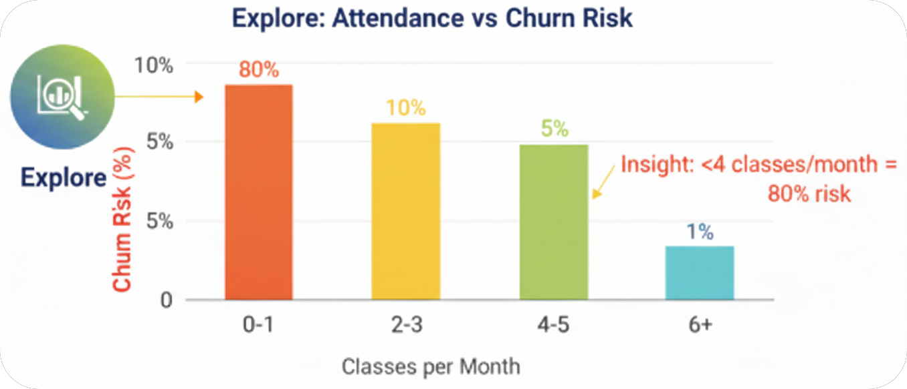
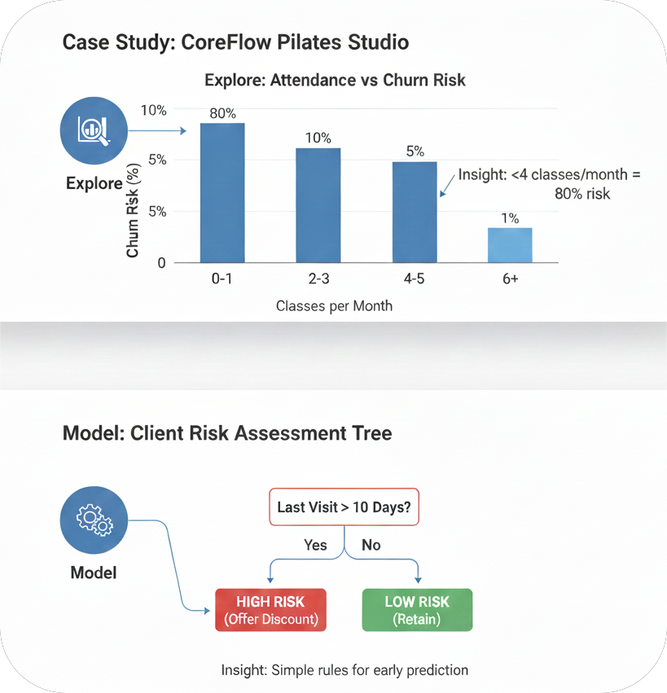

OSEMN Framework
The OSEMN Framework stands for Obtain, Scrub, Explore, Model, and Interpret.
It is a data science method used to turn raw data into useful information.
It gives clear steps to follow when working with data, from collecting it
to understanding the results.
The OSEMN framework was introduced by Hillary Mason, a data scientist and
co-founder of Fast Forward Labs. It was created based on real-world data
science work, not just theory. OSEMN is popular because it is easy to
understand and helps people make better decisions using data.
Methodology Overview
Key Phases
ObtainCollect data from sources like databases, websites, or surveys. Purpose: Get the raw information needed for analysis.
ScrubClean and organize the data by fixing errors, missing values, or duplicates. Purpose: Ensure data is accurate and ready to use.
ExploreAnalyze and visualize the data to find patterns, trends, or relationships. Purpose: Understand the data before building models.
ModelUse statistical or machine learning techniques to make predictions or find insights. Purpose: Solve problems or answer questions using data.
InterpretExplain the results in simple terms and make recommendations. Purpose: Turn data into actionable decisions that others can understand.
Purpose
- Turns raw data into useful insights
- Cleans and organizes data to make it accurate
- Finds patterns, trends, and relationships
- Helps make decisions based on evidence
Applications
- Business: Predict customer behavior or improve sales
- Healthcare: Analyze patient data, predict disease risks
- Finance: Detect fraud, predict stock trends
- Technology/Websites: Understand user behavior, improve apps
- Government/Public Services: Analyze traffic or population data
Real-World Example
Problem Statement
"CoreFlow Pilates Studio has seen a decline in class bookings among its
'Reformer Basic' members. The studio wants to use the OSEMN framework to
predict which clients are likely to stop their memberships so they can
offer a complimentary private session or a membership discount to keep
them engaged."
OSEMN Phases (Case Study)
Obtain (O)
Description: The Pilates studio collects data from its front-desk booking system whenever members check in.
Data Collected:
- Member ID
- Age
- Number of classes attended per month
- Monthly membership fee
Output: Raw dataset containing member attendance and payment information.
Scrub (S)
Description: Cleaning the collected data to ensure accuracy and usability.
- Remove canceled memberships
- Fix missing or incorrect contact information
- Remove duplicate records
Output: Clean and reliable dataset ready for analysis.
Explore (E)
Description: Analyze cleaned data to identify patterns and trends.
- Members attending fewer than 4 classes per month are more likely to cancel
- 80% of low-attendance members stop attending the following month
Output: Insights on attendance and member retention patterns.

Model & Interpret (M + N)
Description: Create a decision model to identify at-risk members and take action to retain them.
- If member is under 30 years old AND has not attended any class in the last 10 days → High Risk of leaving
- Send personalized “We Miss You” WhatsApp messages
- Offer a 10% discount or a free private session
Output: Improved member retention, higher engagement, and increased class bookings.

Advantages & Limitations
| Advantages |
Limitations |
- Structured workflow: Easy to follow from raw data to actionable insights.
- Flexible: Can handle many types of data and industries.
- Helps decision-making: Provides clear, evidence-based recommendations.
|
- Data quality dependent: Poor or incomplete data reduces accuracy.
- Time-consuming: Cleaning and modeling may require significant effort.
- Requires expertise: Statistical or machine learning knowledge is needed for the modeling stage.
|
Industry Adoption
- Fitness & Wellness: Studios like CoreFlow Pilates, gyms, yoga centers (predict customer churn, improve retention).
- Retail & E-commerce: Amazon, Zara (analyze shopping patterns, predict customer behavior).
- Healthcare: Hospitals (predict patient no-shows, disease risk).
- Finance & Banking: Banks (fraud detection, customer retention).
- Technology & Web Analytics: Netflix, Spotify (predict user churn, recommend content).
Reference
Mason, H., & Wiggins, C. (n.d.). The OSEMN data science framework. ML4Devs.
DASCA. (n.d.). A step-by-step guide to the data science workflow.
IBM. (n.d.). What is data science?
Rollins, J. (n.d.). Data Science Methodology.
IBM Data Science Methodology. (n.d.).
About Me
My name is Nurul Nafisah Binti Mohd Nizam. I am a student studying Data
Science (AI). I prepared this report to learn about the OSEMN and Data
Science methodologies and how they are used in real-world data projects.